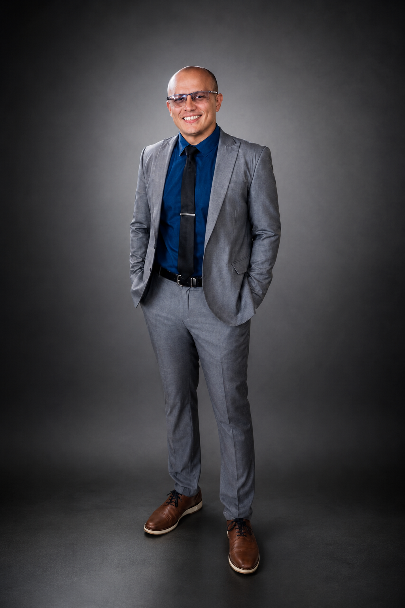

Infraestructura y soporte
Soporte L1/L2, servidores, estaciones de trabajo, hardware, software, CCTV, mantenimiento e implementación.
Ingeniero de Sistemas especializado en infraestructura TI, redes, ciberseguridad, calidad de software y soporte técnico. Conecto tecnología, servicio y mejora continua para resolver problemas reales.

Experiencia en entornos presenciales, híbridos y remotos, apoyando operaciones tecnológicas e internacionales. Combino pensamiento analítico, comunicación clara y orientación a resultados.
Soporte L1/L2, servidores, estaciones de trabajo, hardware, software, CCTV, mantenimiento e implementación.
CCNA, VLAN, routing, switching, monitoreo, VPN, acceso remoto seguro, ciberseguridad y Ethical Hacking.
QA de software, planificación y ejecución de pruebas, Azure Fundamentals, Power BI, Access y JavaScript.
Atención de casos, documentación, seguimiento, sistemas HRIS, cumplimiento y mejora continua.
Docencia STEAM, robótica, programación, pensamiento computacional y aprendizaje basado en proyectos.
Español nativo e inglés avanzado C1 certificado por el INA, con experiencia regional en América.
Una trayectoria multidisciplinaria que integra tecnología, atención de personas, operaciones, calidad y educación.
Base académica en sistemas, educación y una actualización técnica continua en redes, seguridad, nube, calidad y datos.
Énfasis en Docencia para Ingeniería de Sistemas · UISIL ↗ · Plan aprobado; pendiente juramentación y entrega del título · 2026
2011
Verificación oficial INA: copie el número de registro con sus guiones, abra el portal oficial y péguelo en el campo de consulta. El sistema mostrará el nombre, servicio, duración, fecha y centro ejecutor registrados.
2703-03352-20232701-00990-20232201-02204-20192701-05827-20182701-00486-20232102-01591-20232702-01354-20232702-00219-2024Quepos, Puntarenas, Costa Rica · Disponible para oportunidades profesionales.